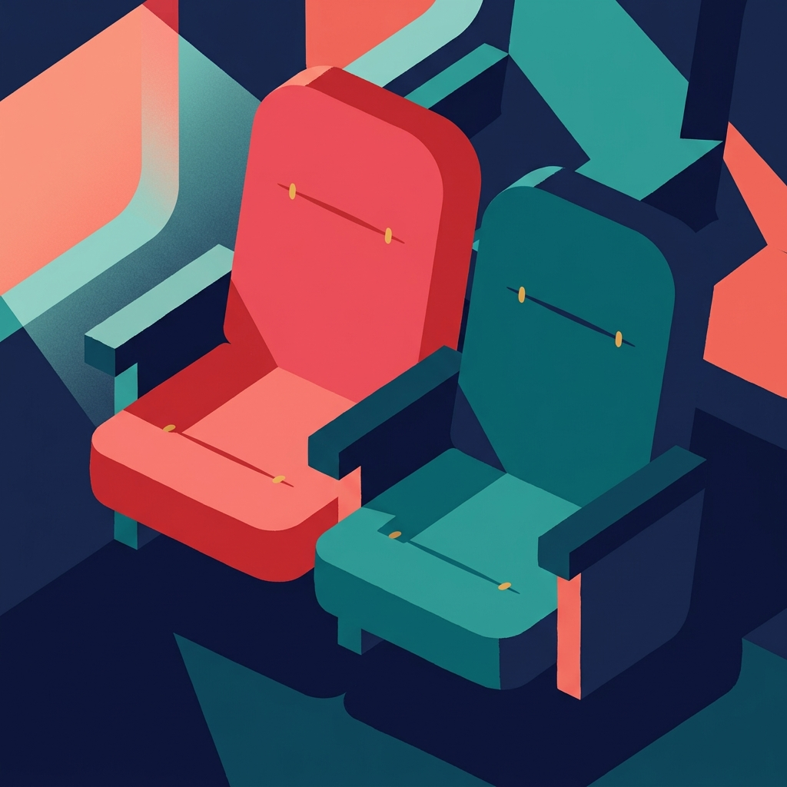
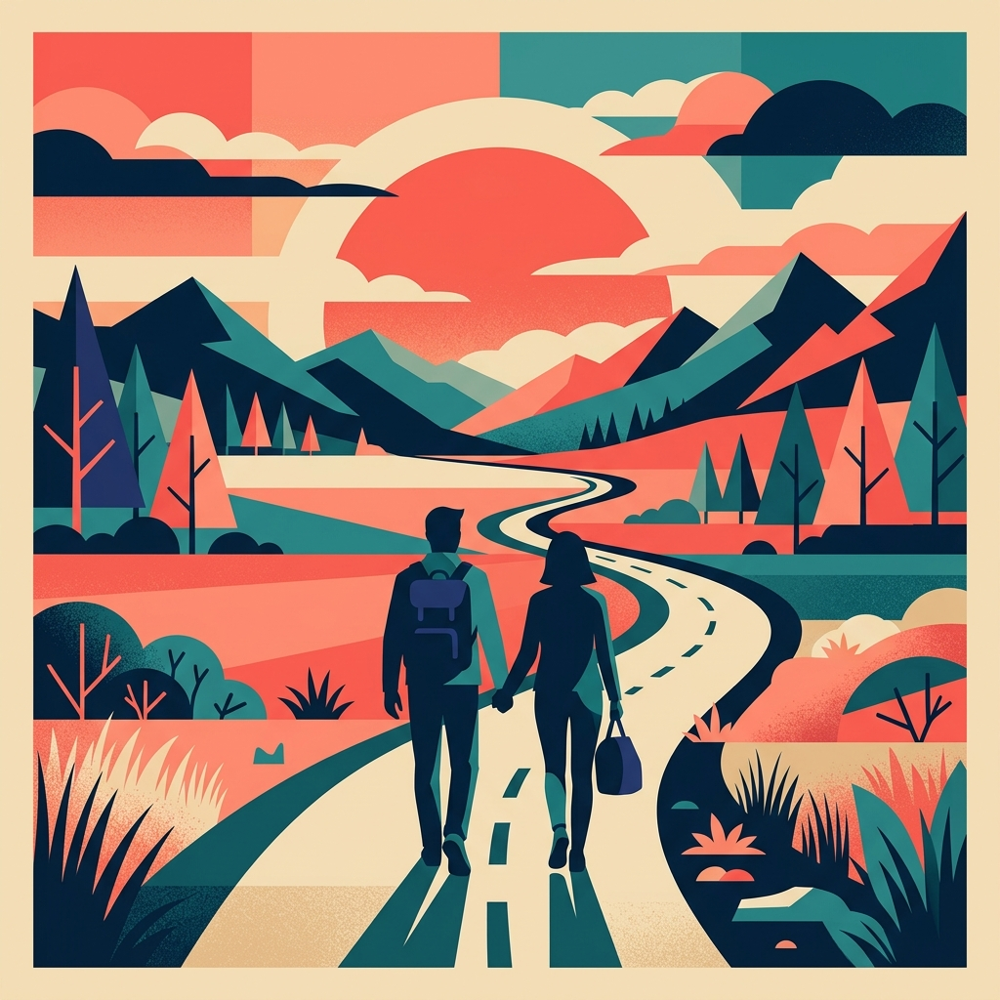
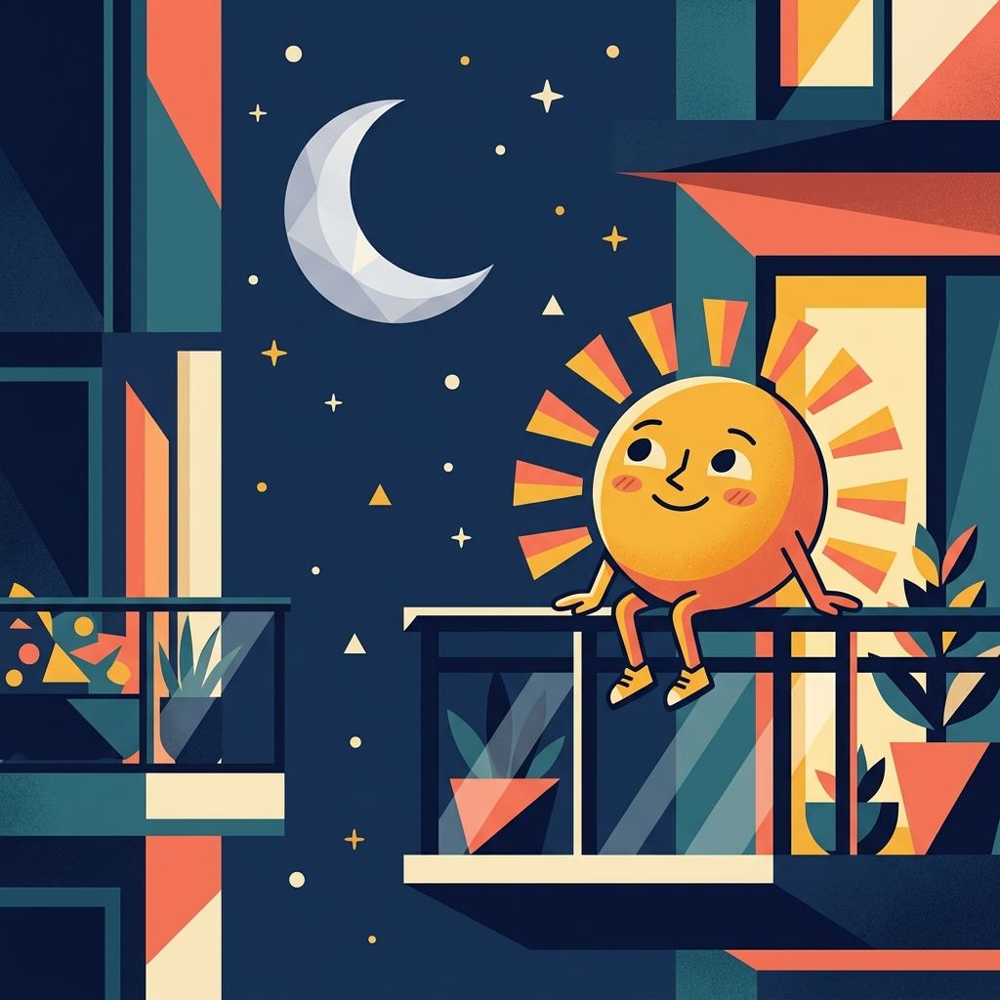
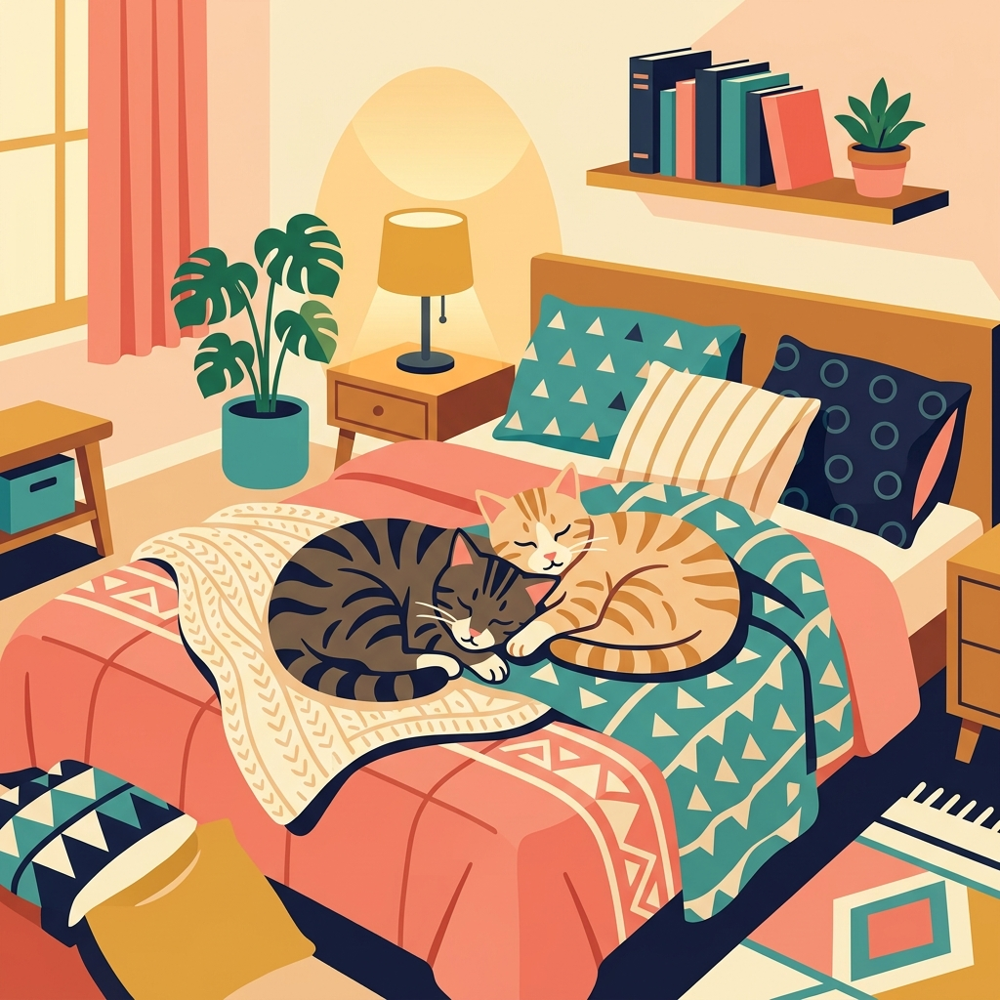
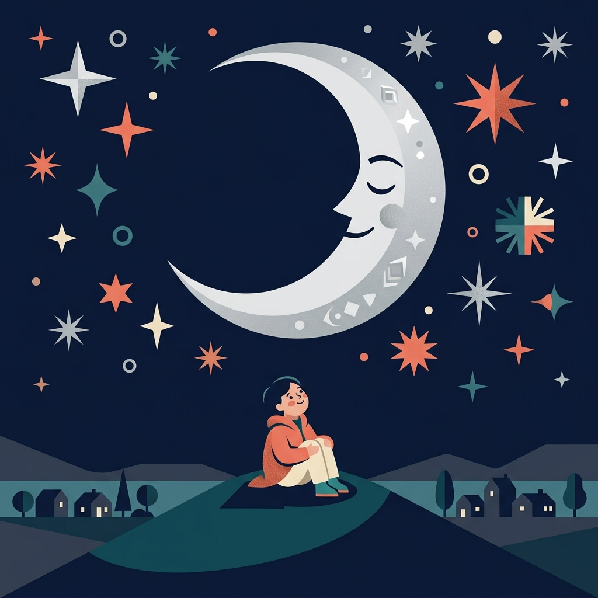
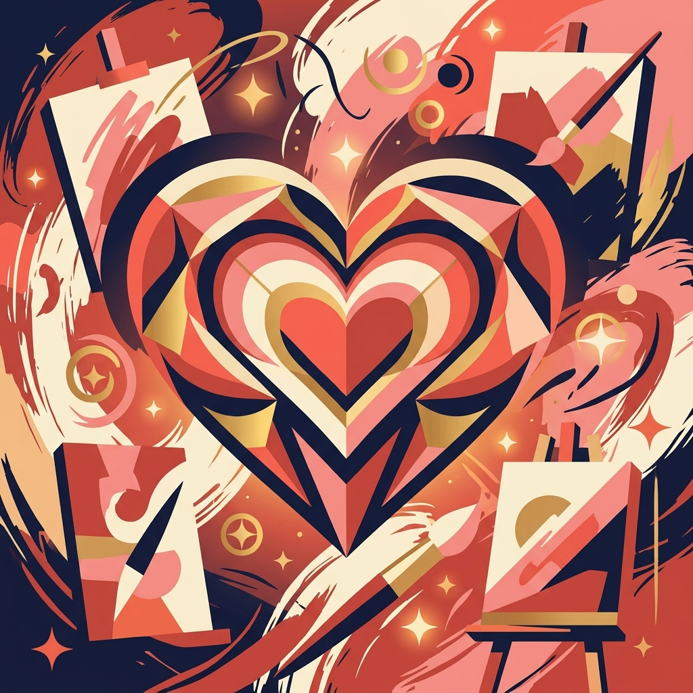
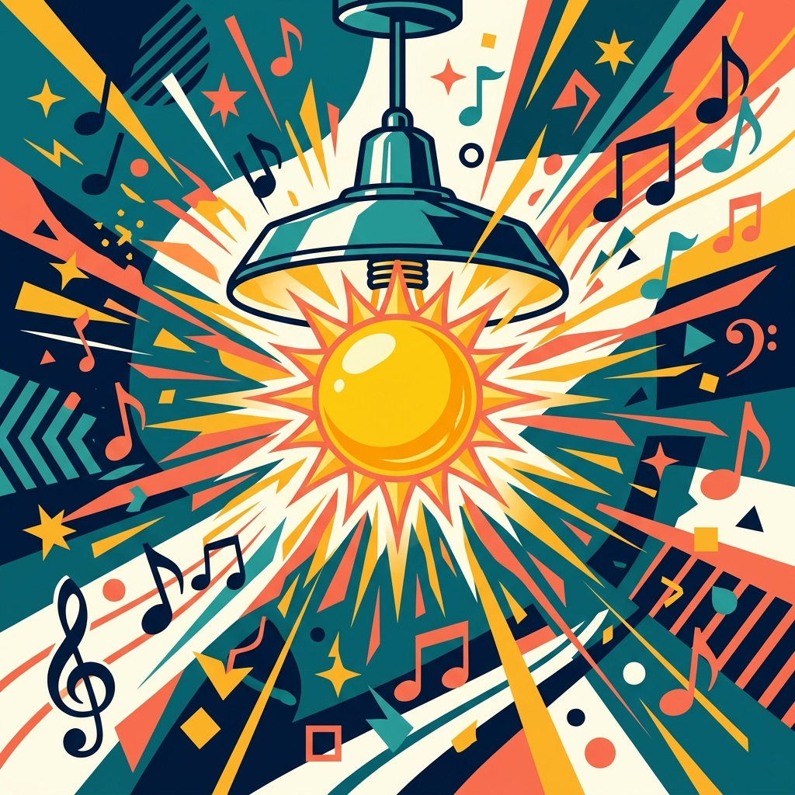
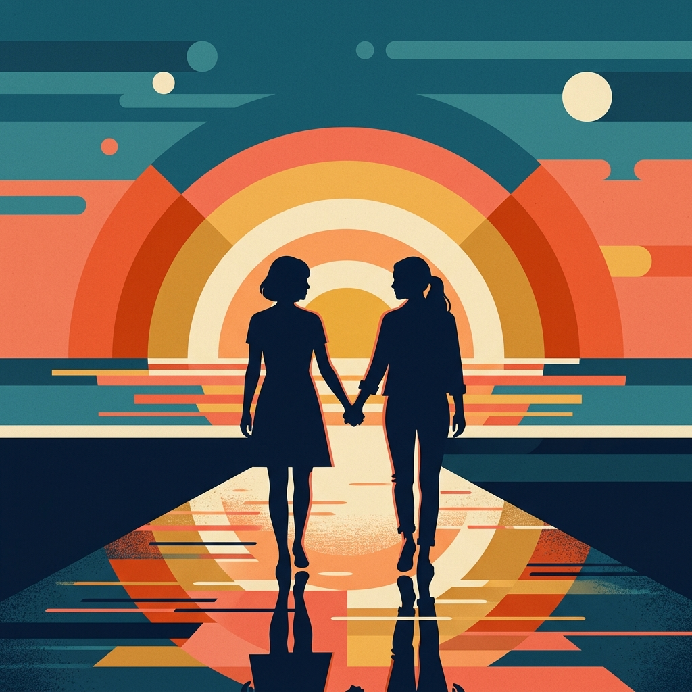
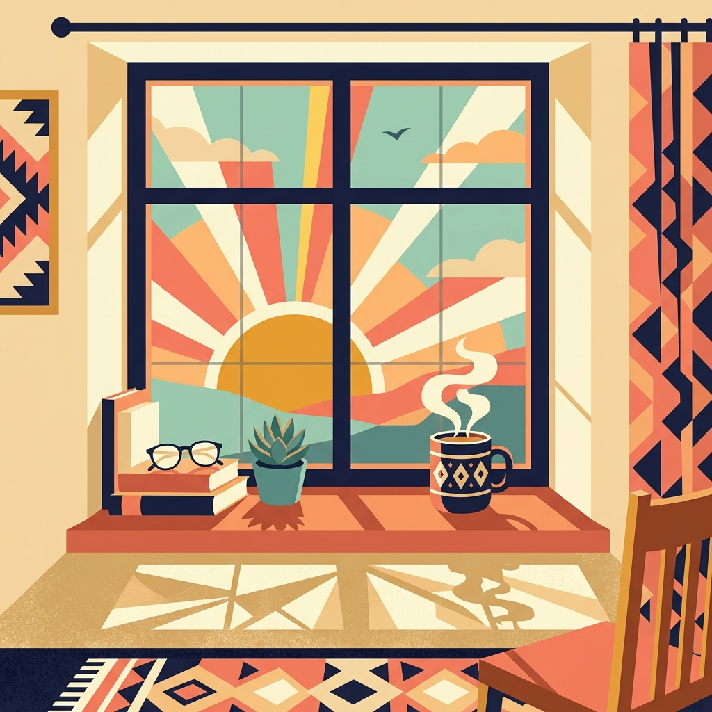

для тебя
Признание
в строчках
9 сцен · 9 песен · одно чувство
прокрути или нажми

Сцена 2
Богатство — это мы
«Мы решили: дорога каждая минута.
Впечатления — наша валюта.
Мы сказочно богаты — ты и я»
радостное · живое · движение


Сцена 4
Котя + Луна и Афина
«Я и твой кот греем твою кровать —
без нас не уснуть, от нас не сбежать»
котя + кошки в одной строчке 🐱🐱
домашнее · уютное · котики


Сцена 6
Прямое признание
«Пожалуйста, будь моим,
пожалуйста, будь моим смыслом.
Мы одни на целой земле,
в самом сердце моих картин.
Я нуждаюсь в твоём тепле,
я хочу быть смыслом твоим»
глубокое · серьёзное · стоп-кадр


Сцена 8
Финал. Просто и честно
«My girl, my girl, my girl —
you will be my girl.
You will be my world»
нежный финал · просто · честно

